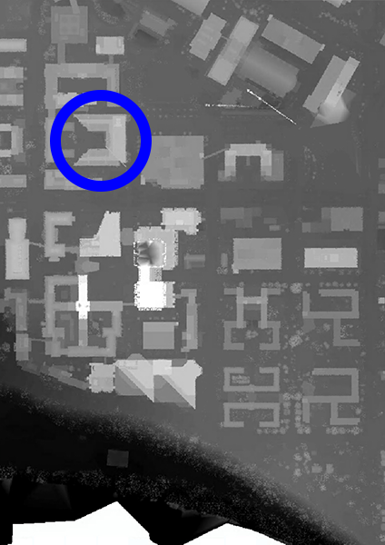

Getting the Job Done with Medium Data
Peter Wiringa
MGIS Student
U-Spatial Research Assistant
wiringa@umn.edu
(Small|Medium|Big) Data
Big data
- “I have big data”
- “I have a big data problem”
- “I have <size> data and a <complexity> problem”
Let’s not overstate it
- It’s probably small or medium data
- You may, however, have a complex problem
“Medium data” defined
- Definitions vary; be flexible
- “…high terabytes, not petabytes” *
- For today’s purposes: Medium data is more than you may be comfortable working with locally, or at all
Meeting the challenge
Is more compute power the answer?

Easy answer: Sometimes
Vectors: Direction and magnitude
Weekends aren’t for work, they’re for running jobs
Example: Transit frequency
- Pulling General Transit Feed Specification (GTFS) data from 577 providers
- Calculating average frequency for routes and on network segments
- >20GB CSVs
- ~170,000 route-shapes
- Estimated 1.5 million stops
Visualizing trip frequency
Generate shapefiles of route-shapes and frequencies:
About five minutes
Example: Minnesota elevation
- LiDAR data covering entire state
- ~29,000 LAZ files (1.1TB)
- 282 billion points
Digital surface model (DSM)
21½ hours to create tiles on a workstation pulling LAZ from files.umn.edu
MN LiDAR points in the browser
Data pre-organized for performance, reported as (4 hours) × (28 machines) × (32 cores/machine)
Again: Is more compute power the answer?
- The answer is still “sometimes”
- Local: Almost certainly (parallelize what you can)
- Cloud: Consult your Magic 8-Ball
- Don’t let anyone pinch pennies when they order your next computer